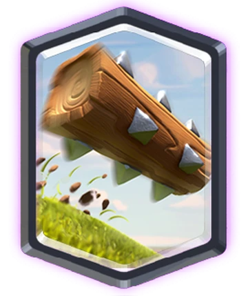
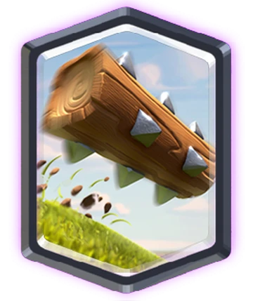

How to Counter Evo Goblin Barrel
Cheapest counter is to play zap on the fake barrel and snowball on the real one. Best counter is logged on the real barrel and barb barrel on the fake one. This counter works even if you get the Two mixed up.


 
